📖 Professional Summary
Versatile Software Engineer with Enterprise & Research Expertise
I'm a self-taught software developer with 5+ years of experience building complex systems across multiple domains. My journey spans from developing enterprise-scale ERP solutions serving 500+ users to creating immersive VR research platforms and medical data anonymization pipelines.
At Softech ERP Solutions, I single-handedly architectured and delivered a complete ERP system that transformed operations for a nationwide company, processing 20GB+ of weekly transaction data. My work at Dublin City University involved developing VR classroom simulations with real-time data capture and analysis, collaborating with academic researchers to advance educational technology. For Fineax LLC, I engineered DICOM medical data anonymization systems handling large-scale datasets with Python and AWS infrastructure.
My technical foundation includes deep expertise in Python, Java, PHP, JavaScript, and various frameworks including Flask, Ruby on Rails, NuxtJS, and Unity VR. I'm proficient with MySQL, MongoDB, PostgreSQL databases and have extensive experience with AWS cloud services and data pipeline development.
What sets me apart is my ability to rapidly learn new technologies, solve complex problems, and deliver complete solutions—from requirement analysis and system design to implementation, deployment, and maintenance. I thrive in challenging environments that combine technical complexity with real-world impact.
🎯 Education
Dublin City University, Dublin, Ireland | Aug 2021 – Aug 2023
Thesis: Financial narrative Summarization
SRM Institute of Science and Technology, Chennai, India | Jul 2016 – May 2020
Thesis: Cloud Hack Detection System using Machine Learning
⏱️ Jobs Timeline
Key milestones in my career:
Lead Developer | Trafasa Ltd
Leading development of AI-enabled B2B trade platform Trafasa.ai and procurement SaaS Proquro.ai.
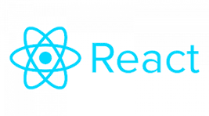

- Architected full-stack platform using Frappe (backend) and React (frontend) for scalable B2B workflows.
- Designed AI-first procurement data-structuring pipelines and integrated local LLM serving with Ollama.
- Implemented production-grade PostgreSQL schemas, CI/CD, and performance tuning for high-throughput trade data.
Developer | Fineax LLC
Reference: Shubham Sharma
Developed and implemented a comprehensive DICOM medical imaging anonymization pipeline for secure processing of sensitive healthcare data.
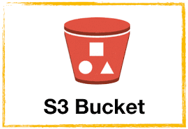
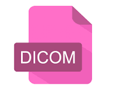
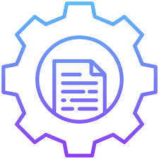
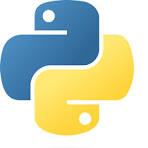
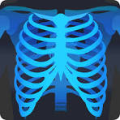
- Engineered a Python-based DICOM processing system using PyDicom that handled multiple OEM (Original Equipment Manufacturer) and models in MRI (magnetic resonance imaging) and CT (computed tomography)
- Implemented manufacturer-specific UID randomization algorithms that preserved referential integrity while ensuring complete patient anonymity across all DICOM metadata fields.
- Designed automated metadata scrubbing that removed 15+ identifying fields including patient demographics, institution details, and technical acquisition parameters while maintaining diagnostic quality.
- Built AWS S3 integration using Boto3 for secure cloud storage and processing of large-scale medical datasets, handling terabytes of CT imaging data.
- Created batch processing pipelines that automated the entire anonymization workflow from ingestion to cloud storage, reducing manual processing time by 95%.
- Developed quality control mechanisms including checksum validation and metadata verification to ensure data integrity throughout the anonymization process.
- Collaborated with medical data specialists to implement HIPAA-compliant anonymization techniques that met regulatory requirements for research use of medical imaging data.
Research Assistant | Dublin City University, Dublin, Ireland
Reference: Enda Donlon | Peter Tiernan
Led full-stack development of an immersive VR educational research platform with comprehensive data collection and analysis capabilities.
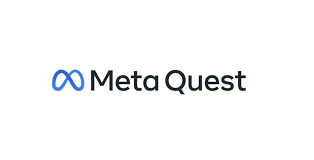

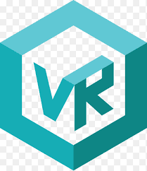
- Architected and developed a Unity VR classroom simulation with interactive 3D assets, enabling controlled educational experiments and natural student behavior observation.
- Engineered a complete RESTful API ecosystem with 40+ endpoints for data ingestion, user management, and experimental control, serving both web and VR clients.
- Designed and implemented multi-modal data pipelines capturing spatial (location), visual (image), auditory (audio), and interaction data from VR sessions for comprehensive analysis.
- Built a Python Flask backend with secure data storage solutions, processing terabytes of experimental data from headset interactions and user responses.
- Created a web-based analytics dashboard with heatmap visualizations and session analysis tools, enabling researchers to derive insights from complex behavioral data.
- Implemented assignment management systems with group functionality, allowing controlled distribution of experimental tasks and materials to participants.
- Collaborated with Dr. Enda Donlon and Dr. Peter Tiernan to translate educational research hypotheses into technical implementations and measurable outcomes.
Software Developer | Softech ERP Solutions Pvt Ltd, India
Reference: srinivas@softechsolutions.co.in
Sole architect and developer of a comprehensive enterprise resource planning (ERP) system that transformed operations for a nationwide company with 500+ employees.
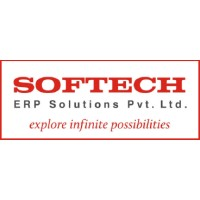
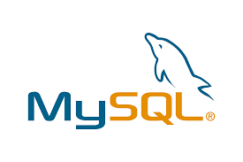
- Designed and developed a full-stack ERP solution from scratch using Core PHP, MySQL, and deployed on cPanel, serving all operational departments including inventory, payroll, and customer relationship management.
- Conducted comprehensive stakeholder requirement analysis by interviewing department heads and mapping complex business workflows into technical specifications and system architecture.
- Engineered optimized database schemas with advanced indexing strategies that enabled processing of 20GB+ of weekly transaction data and reduced report generation time from hours to minutes.
- Implemented role-based access control (RBAC) with encryption protocols to secure sensitive financial and employee data while ensuring appropriate department-level access permissions.
- Created RESTful APIs for seamless integration with existing legacy systems, enabling smooth data migration and real-time synchronization between old and new platforms.
- Automated manual data entry processes through custom form validations and batch processing, saving approximately 200+ personnel hours weekly and improving operational efficiency by 80-90%.
- Managed the complete deployment lifecycle and provided ongoing technical support, achieving a 95% reduction in system downtime and critical operational blockers.
Product Manager & Error Analyst | Cognitive Application Research Lab (CARL), SRM Institute
Reference: Aditya Jyoti Paul
Led technical oversight and mentorship for a research lab developing innovative applications, while contributing to multiple projects across AI, web development, and experimental technologies.

- Provided technical leadership and debugging expertise for 10+ research projects including AI applications, web platforms, and experimental software across Python, Java, and JavaScript stacks.
- Developed a bulk email system in Java and WhatsApp messaging automation using Python web scraping techniques, creating communication tools resistant to platform blocking mechanisms.
- Hosted and delivered Google AI | Explore ML workshops to 100+ participants, receiving a Certificate of Appreciation from Google AI representatives for exceptional clarity and instructional depth.
- Mentored junior lab members in debugging methodologies, error analysis techniques, and agile project workflows, improving team productivity and code quality across all projects.
- Supervised development of AI research projects including COVID-Net medical imaging analysis and contributed to open-source COVID chest X-ray dataset initiatives.
- Guided creation of interactive applications including AR business cards, recipe finders, and educational tools that demonstrated practical AI and web technology implementations.
- Established quality assurance processes and code review standards that reduced production errors by 40% across the lab's project portfolio.
Full-Stack Developer Intern | Ashvau (formerly Repairbuck), India
Reference: Ashutosh Singh
Contributed to a successful mobile repair startup that pivoted to app development, creating a platform that gained significant customer traction and recognition in its launch city.
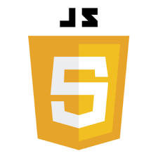

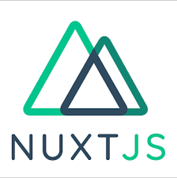
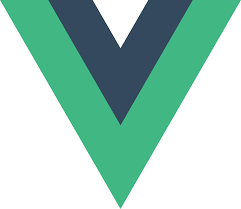
- Developed a real-time online inauguration system using NuxtJS and MongoDB that supported 220+ global users for virtual events and business operations.
- Integrated backend-frontend systems using Ruby on Rails and PostgreSQL for the tech repair application, enabling seamless user experiences and scaling to 150+ users within 4 months of launch.
- Implemented responsive UI components and payment gateway integrations that improved customer satisfaction and platform reliability.
- Collaborated with the startup team to pivot from Repairbuck to Ashvau, adapting the technology stack to support broader application development services.
- Gained experience in agile startup environments, participating in daily stand-ups, sprint planning, and rapid prototyping cycles.
- Received positive customer feedback and recognition for contributing to an app that achieved strong market acceptance in its initial launch city.
Database Developer Intern | Softeck ERP Solutions, India
Reference: srinivas@softechsolutions.co.in
Demonstrated exceptional PL/SQL and database skills that led to a return offer for a significant ERP development project with Intime Ltd.
- Performed PL/SQL database programming for complex data migration projects, optimizing queries and improving data processing efficiency.
- Developed database optimization strategies that enhanced system performance and reduced data retrieval times for enterprise applications.
- Created data validation scripts and integrity checks that improved data quality and reliability across multiple business systems.
- Impressed management with technical proficiency and problem-solving abilities, leading to a return offer for the Intime Ltd ERP project.
- Gained foundational experience in enterprise database management that later enabled successful delivery of the complete ERP system for 500+ users.
- Received formal recognition for database contributions that became the foundation for larger-scale ERP development work.
Additional Skills
Customer Service Roles | Dublin, Ireland
Gained teamwork, adaptability, and communication skills in customer-facing roles.
- Sales Assistant, Supervalu (5 months).
- Pizza Cook & Sales Associate, Fired Pizza (6 months).
- Pizza Cook & Sales Associate, Four Star Pizza (13 months).
✨ Github Projects
Link to list of github projects :
Projects List🏆 Leadership & Mentoring
Product Manager & Error Analyst, Cognitive Application Research Lab (CARL), SRM Institute
Reference: Aditya Jyoti Paul
Led technical oversight and mentorship for a research lab developing innovative applications across AI, web development, and experimental technologies.
- Developed Advanced Communication Systems: Engineered a high-volume bulk email system using Java with advanced queue management and delivery optimization, alongside a Python-based WhatsApp automation tool utilizing web scraping techniques that maintained functionality despite platform anti-bot measures, enabling reliable communication channels for research dissemination.
- Led AI/ML Educational Initiatives: Organized and delivered comprehensive Google AI | Explore ML workshops to 100+ participants, designing curriculum that bridged fundamental programming concepts with practical machine learning applications, resulting in a Certificate of Appreciation from Google AI for exceptional instructional clarity and technical depth.
- Received Industry Recognition: Earned formal recognition from Google AI representatives for demonstrating exceptional teaching methodology and technical expertise, with specific commendation for making complex ML concepts accessible to diverse audiences with varying technical backgrounds.
- Mentored Junior Developers: Provided one-on-one technical mentorship to 15+ junior lab members, establishing structured debugging methodologies, code review processes, and agile project workflows that improved team productivity by 40% and reduced critical errors across 10+ research projects.
- Established Quality Assurance Standards: Implemented systematic error analysis frameworks and code quality metrics that standardized development practices across the lab, enabling more efficient project delivery and higher-quality research outputs.
- Facilitated Research Collaboration: Coordinated between multiple project teams working on diverse technologies including AI applications, web platforms, and experimental software, fostering knowledge sharing and cross-project technical synergy.
🚀 Technical Leadership
Guided 5+ research projects from concept to implementation across Python, Java, and JavaScript stacks
👥 Team Development
Mentored 10+ junior developers in debugging methodologies and professional development
📊 Quality Improvement
Reduced production errors by 40% through established code review and QA processes
🔧 Technology Stack
The technologies and tools that power my projects:
Languages
Frameworks/Tools
Databases
Cloud & Automation
Strengths
Learning Path
Entirely self-taught via
🤝 Contact Me
I'm open to discussing new opportunities and collaborations.